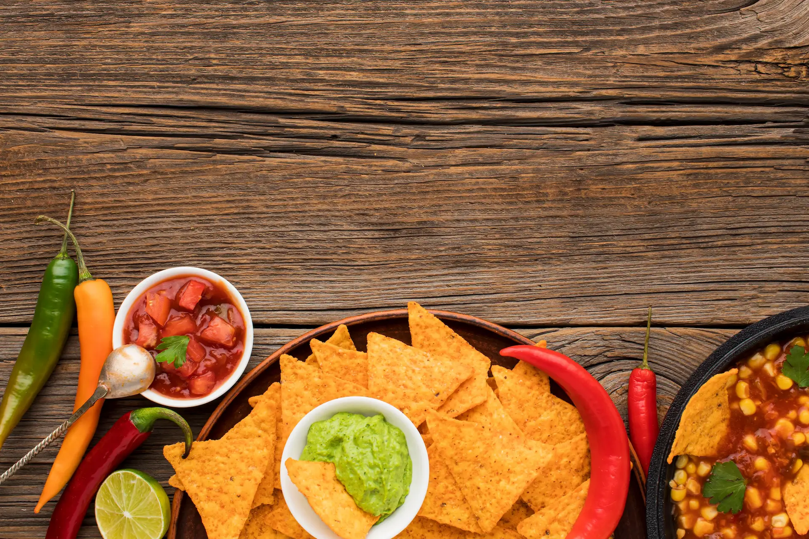

¡Te invito a descubrir la gastronomia de
México, una mezcla de sabores y tradiciones
que siempre sorprenden!
Sabores que representan a México
La gastronomía mexicana es reconocida por la mezcla de sabores intensos, colores vibrantes y recetas tradicionales que han pasado de generación en generación. Cada platillo refleja parte de la identidad cultural y la historia de México.
Tradición, cultura y color
México posee una de las cocinas más representativas del mundo. Ingredientes como el maíz, los chiles y las especias forman parte esencial de preparaciones llenas de tradición y diversidad cultural.
Explora la gastronomía mexicana
En este sitio podrás conocer algunos platos típicos e ingredientes tradicionales que hacen parte de la riqueza culinaria mexicana, a través de una experiencia visual adaptable e interactiva.